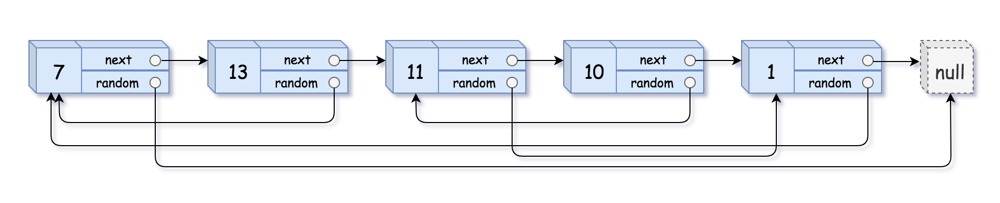

138. 随机链表的复制
题目与约束
给你一个长度为 n 的链表，每个节点包含一个额外增加的随机指针 random ，该指针可以指向链表中的任何节点或空节点。
构造这个链表的 深拷贝。 深拷贝应该正好由 n 个 全新 节点组成，其中每个新节点的值都设为其对应的原节点的值。新节点的 next 指针和 random 指针也都应指向复制链表中的新节点，并使原链表和复制链表中的这些指针能够表示相同的链表状态。复制链表中的指针都不应指向原链表中的节点。
例如，如果原链表中有 X 和 Y 两个节点，其中 X.random --> Y 。那么在复制链表中对应的两个节点 x 和 y ，同样有 x.random --> y 。
返回复制链表的头节点。
用一个由 n 个节点组成的链表来表示输入/输出中的链表。每个节点用一个 [val, random_index] 表示：
val：一个表示Node.val的整数。random_index：随机指针指向的节点索引（范围从0到n-1）；如果不指向任何节点，则为null。
你的代码 只 接受原链表的头节点 head 作为传入参数。
示例 1：

输入：head = [[7,null],[13,0],[11,4],[10,2],[1,0]]
输出：[[7,null],[13,0],[11,4],[10,2],[1,0]]
示例 2：
输入：head = [[1,1],[2,1]]
输出：[[1,1],[2,1]]
示例 3：
输入：head = [[3,null],[3,0],[3,null]]
输出：[[3,null],[3,0],[3,null]]
提示：
0 <= n <= 1000-104 <= Node.val <= 104Node.random为null或指向链表中的节点。
核心不变量
复制节点紧跟原节点，random 可由 original.random.next 得到。
完整推导
思路推导
-
直觉与痛点（哈希表映射法）：
深拷贝最头疼的是
random指针。当你在复制节点 A 的时候，它的random可能指向节点 C，但此时节点 C 还没有被创建出来！常规解法：用一个
HashMap<Node, Node>。第一遍遍历，只根据原节点创建新节点，并全存进 Map 里（原节点当 Key，新节点当 Value）。第二遍遍历，利用 Map 去查出对应的新节点，连上next和random。痛点：空间复杂度是 O(N)，对于面试要求来说不够惊艳。
-
破局思路（原地克隆交织法）：
能不能不用 HashMap 也能记住“谁是谁的克隆体”？
答案是：把克隆体直接绑在本体的后面！
如果把原链表 变成 。
此时，本体和克隆体的物理位置是绑定的。A 的克隆体永远是 A.next！
-
逻辑推演（极度舒适的三步曲）：
-
第一步：克隆并交织（分裂）。遍历链表，在每个节点后面插入一个它的克隆节点。
-
第二步：分配
random指针。这是最巧妙的一步。克隆体 的random应该指向哪里？它应该指向本体 A 的random的克隆体！
公式化表述：
A'.random = A.random.next。- 第三步：拆分链表（提取）。将这个交织的链表一分为二，把本体和克隆体拆开。把克隆体串成一个新链表返回，同时务必把原链表恢复原状。
Java 实现（O(1) 空间满分版）
C++ 实现
实现来源：灵茶山艾府题解（MIT License）
class Solution { public: Node* copyRandomList(Node* head) { // 复制每个节点，把新节点直接插到原节点的后面 for (Node* cur = head; cur; cur = cur->next->next) { cur->next = new Node(cur->val, cur->next, nullptr); } // 遍历交错链表中的原链表节点 for (Node* cur = head; cur; cur = cur->next->next) { if (cur->random) { // 要复制的 random 是 cur->random 的下一个节点 cur->next->random = cur->random->next; } } // 把交错链表分离成两个链表 Node dummy(0); Node* tail = &dummy; for (Node* cur = head; cur; cur = cur->next, tail = tail->next) { Node* copy = cur->next; // 新节点 tail->next = copy; // 把新节点插在 tail 的后面，构建新的链表 cur->next = copy->next; // 恢复原节点的 next } return dummy.next; } };Python 实现
实现来源：灵茶山艾府题解（MIT License）
class Solution: def copyRandomList(self, head: 'Optional[Node]') -> 'Optional[Node]': # 复制每个节点，把新节点直接插到原节点的后面 cur = head while cur: cur.next = Node(cur.val, cur.next) cur = cur.next.next # 遍历交错链表中的原链表节点 cur = head while cur: if cur.random: # 要复制的 random 是 cur.random 的下一个节点 cur.next.random = cur.random.next cur = cur.next.next # 删除交错链表中的原链表节点，剩下的节点即为新链表 cur = dummy = Node(0, head) while cur.next: # 删除原链表的节点，即当前节点的下一个节点 # 如果要恢复原链表，见另一份代码【Python3 写法二】 cur.next = cur.next.next cur = cur.next return dummy.nextGo 实现
实现来源：灵茶山艾府题解（MIT License）
func copyRandomList(head *Node) *Node { // 复制每个节点，把新节点直接插到原节点的后面 for cur := head; cur != nil; cur = cur.Next.Next { cur.Next = &Node{Val: cur.Val, Next: cur.Next} } // 遍历交错链表中的原链表节点 for cur := head; cur != nil; cur = cur.Next.Next { if cur.Random != nil { // 要复制的 random 是 cur.Random 的下一个节点 cur.Next.Random = cur.Random.Next } } // 把交错链表分离成两个链表 dummy := Node{} tail := &dummy for cur := head; cur != nil; cur, tail = cur.Next, tail.Next { clone := cur.Next // 新节点 tail.Next = clone // 把新节点插在 tail 的后面，构建新的链表 cur.Next = clone.Next // 恢复原节点的 next } return dummy.Next }C 实现
实现来源：灵茶山艾府题解（MIT License）
struct Node* copyRandomList(struct Node* head) { // 复制每个节点，把新节点直接插到原节点的后面 for (struct Node* cur = head; cur; cur = cur->next->next) { struct Node* copy = malloc(sizeof(struct Node)); copy->val = cur->val; copy->next = cur->next; copy->random = NULL; cur->next = copy; } // 遍历交错链表中的原链表节点 for (struct Node* cur = head; cur; cur = cur->next->next) { if (cur->random) { // 要复制的 random 是 cur->random 的下一个节点 cur->next->random = cur->random->next; } } // 把交错链表分离成两个链表 struct Node dummy; struct Node* tail = &dummy; for (struct Node* cur = head; cur; cur = cur->next, tail = tail->next) { struct Node* copy = cur->next; // 新节点 tail->next = copy; // 把新节点插在 tail 的后面，构建新的链表 cur->next = copy->next; // 恢复原节点的 next } return dummy.next; } -
/*
// Definition for a Node.
class Node {
int val;
Node next;
Node random;
public Node(int val) {
this.val = val;
this.next = null;
this.random = null;
}
}
*/
class Solution {
public Node copyRandomList(Node head) {
if (head == null) {
return null;
}
// 1. 第一步：克隆节点，并将其插入到原节点之后
// 原链表：A -> B -> C
// 现链表：A -> A' -> B -> B' -> C -> C'
Node curr = head;
while (curr != null) {
Node clone = new Node(curr.val);
clone.next = curr.next;
curr.next = clone;
curr = clone.next;
}
// 2. 第二步：设置克隆节点的 random 指针
curr = head;
while (curr != null) {
if (curr.random != null) {
// 克隆节点的 random 就是原节点 random 的下一个节点（即克隆体）
curr.next.random = curr.random.next;
}
// 每次跳两步，跳到下一个原节点
curr = curr.next.next;
}
// 3. 第三步：拆分链表，将新旧链表分离，并恢复原链表结构
curr = head;
Node cloneHead = head.next; // 克隆链表的头节点
while (curr != null) {
Node clone = curr.next;
// 恢复原链表的 next 指针
curr.next = clone.next;
// 串联克隆链表的 next 指针（注意判断是否到了末尾）
clone.next = (clone.next != null) ? clone.next.next : null;
// 指针推进
curr = curr.next;
}
return cloneHead;
}
}
复杂度
- 时间复杂度：O(N)。我们一共遍历了原链表 3 次（克隆、分配随机指针、拆分），每次都是线性时间，总时间依然是 O(N)。
- 空间复杂度：O(1)。除了作为结果返回的 N 个新节点外，我们只使用了几个常数级别的指针变量，没有借用任何哈希表结构。
- 致命踩坑：不要把原链表弄坏了！
在第三步“拆分链表”时，很多同学光顾着把 A' -> B' -> C' 串联起来，却忘记了让 A -> B -> C 恢复原样（比如把 A.next 置为了 null）。在工程开发中，改变传入的原始数据结构是非常危险的操作。 如果你能在写代码时主动向面试官解释：“我在最后一步不仅提取了深拷贝的链表，还特意将原链表完好无损地恢复了”，这绝对是极大的工程素养加分项！